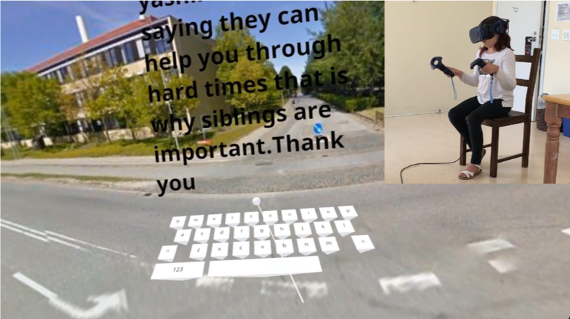
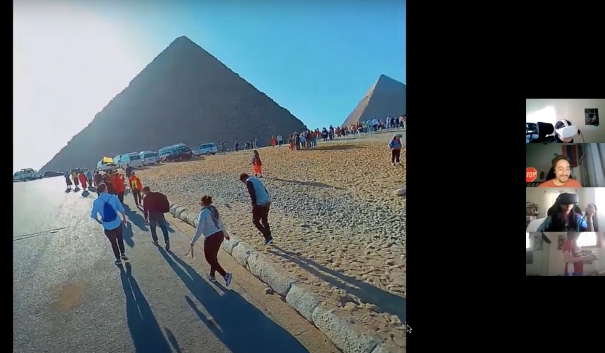

Research
Karimi, H., & Sañosa, D. (2021, November). A New Literary Device: Exploring Multimodal Literacies through VR Technology. CALICO Immersive Realities SIG.
Our current research is part of an exploratory project to support L1 literacy instruction through immersive virtual reality environments while developing an original VR game. We conceptualize reading, writing, and technology use as multimodal literacies in content areas such as science and art. This research highlights impactful aspects of both game design and instructional design, such as agency, purposeful play, creativity, and communication, which we incorporate into our software development. Our presentation includes our findings, current progress, and future directions of these reciprocal research and development processes.
{kind=link}
Chun, D., Karimi, H., & Sañosa, D. (2021, June). Traveling by Headset: Immersive VR for Language Learning. CALICO Annual Conference 2021: Global Realities (Virtual).
In line with the 2021 CALICO Conference theme “Global Realities,” we presented a plenary on how Immersive Virtual Reality (IVR) could be used for second language learning by allowing learners to virtually travel around the globe via headset. The main affordances of VR technology include immersing learners in an authentic cultural context almost anywhere on the globe while manifesting a strong sense of presence and enabling learning through embodied cognition, which involves kinesthetic engagement. In this article, we first review current models of immersive learning and note how certain processes of second language and culture learning are missing in these models. Using some examples of IVR apps for L2 learning, we discuss the research to date that focuses on the affordances of the technology for languaculture learning and propose how the effectiveness of these apps could be studied, expanding on the cognitive-affective model of immersive learning (CAMIL, proposed by Makransky and Petersen, 2021) to include social factors. We conclude with some recommendations for the development of future immersive VR apps for languaculture learning that follow our expanded theoretical model.
{kind=link}